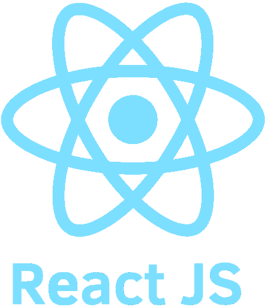
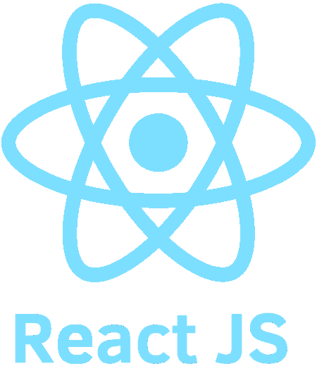

Softs
- 🔹Support.
- 🔹Work under pressure.
- 🔹Teamwork.
- 🔹Proactivity.
- 🔹Communication.
- 🔹Intermediate English.
Systems Analyst with experience in the areas of application support, creation of reports in tools such as Power BI, Excel, and in the creation of Data Extraction, Transformation and Loading (ETL) processes, management of Relational Databases and Web Programming, I am a proactive person, eager to obtain personal and professional growth and learning new technologies.
Coming from the City of Santa Cruz de la Sierra - Bolivia, I consider myself a proactive professional eager to learn and have professional and personal growth. I have extensive communication and teamwork skills, as well as a quick learning ability.


 



Belonging to the Microsoft Community of the UTEPSA UCOM University, where I gave talks on Cloud Computing technologies (Microsoft Azure). Also take part in the Data Mining Integration Project to increase the productivity of the Tourism Company "Turismo Balas".